I write software for the people who wash the world — plant-ops, automation, telemetry — and, after hours, a small pile of apps I built because they were fun.
Twenty years in one industry, by choice. I make laundry plants legible to the people who run them.
Started at ETECH in Minneapolis in 2006 — one Rails app, a wall of serial-line PLCs, and a thousand Excel files holding the whole operation together. When Kannegiesser acquired the team in 2017, those tools went to plants around the world.
Most of the last decade as Director of Software Development. My teams ship plant-ops software, machine-control automation, and remote-management surfaces to industrial laundries globally.
These days the job is less about writing every line and more about judgment — setting direction, reviewing what a fleet of agents produces, and making sure twenty years of laundry-floor pattern-matching ends up in the software.
The apps below are the after-hours stuff: a maintenance system that's the distillation of that whole career, and a few smaller things I made because I wanted them to exist.
Started at ETECH in Minneapolis — Rails, serial-line PLCs, and a lot of hours on the laundry floor. The first stretch was less about code than about learning how a plant actually runs.
Kannegiesser acquired the team and the scope widened — from one shop's tools to plant-ops, automation, and remote-management surfaces built into full laundry solutions shipping worldwide.
Two decades of laundry-floor pattern-matching, pointed at high-quality, AI-driven product. The edge isn't the model — it's knowing exactly what's worth building.
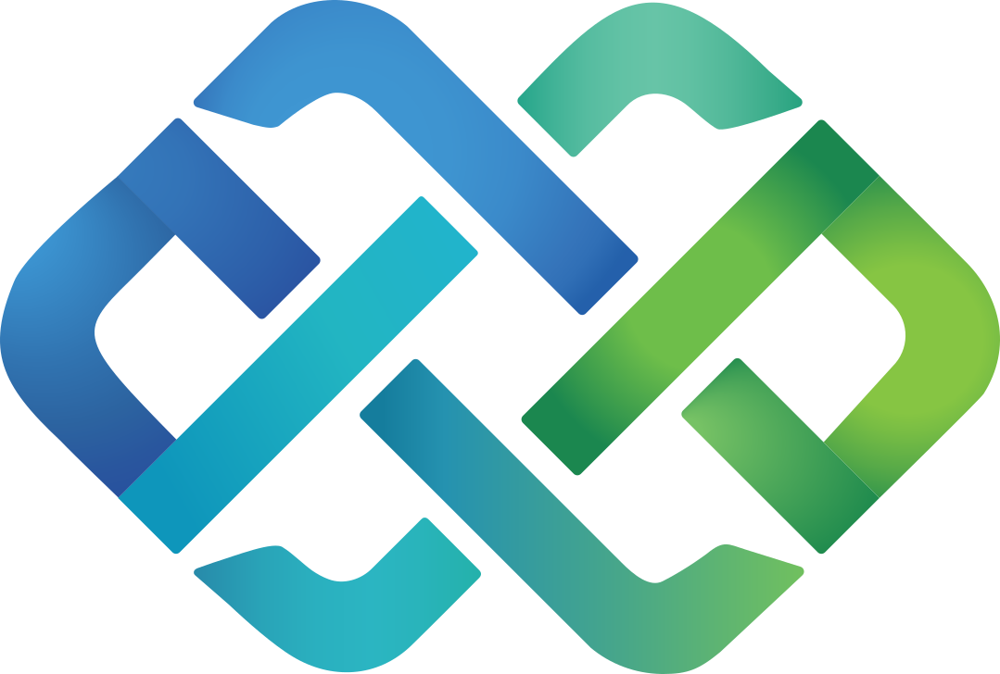
cmms · pm · parts · aiTwenty years on the laundry floor in one super-app: PM scheduling, work orders, parts, vendor portals, AI throughout. The one I'm proudest of ♥
open case file →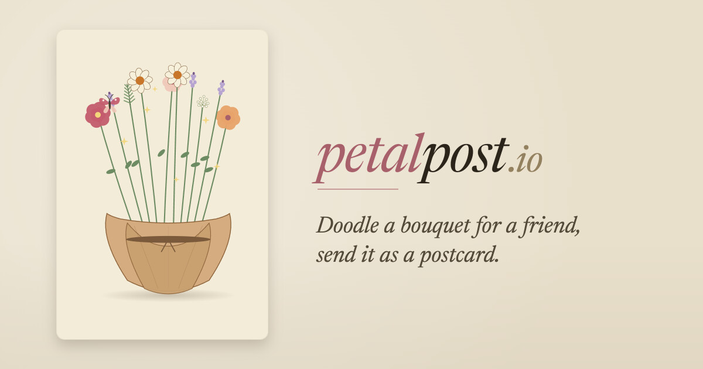
real mail · lob · stripeDesign a card, tie a note, hit send — a real 4×6 art postcard drops in someone's mailbox. Low-cost, personalized, no app to install.
open case file →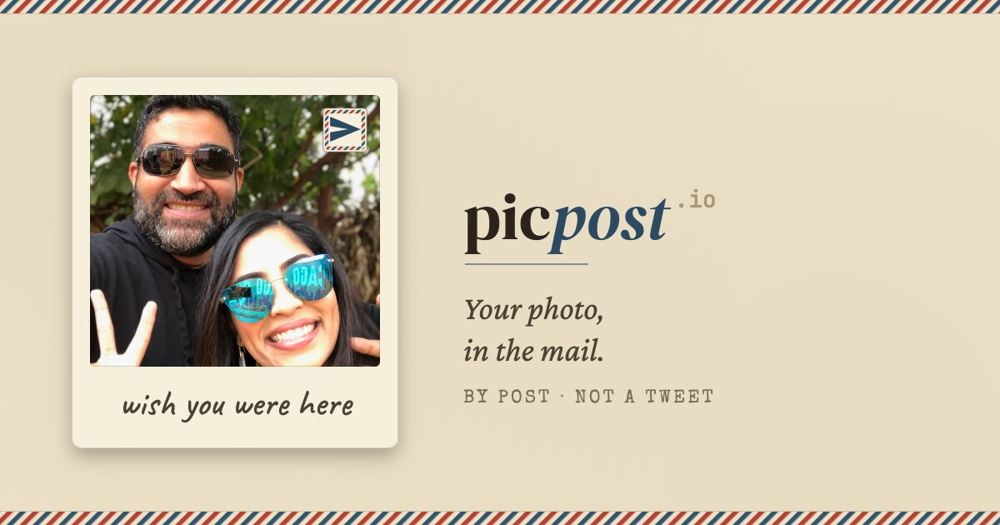
photos → mailboxThe photo-first cousin of PetalPost. Drop in a picture, add a line, and it's printed and mailed as a proper postcard. The one people actually ask me for.
open case file →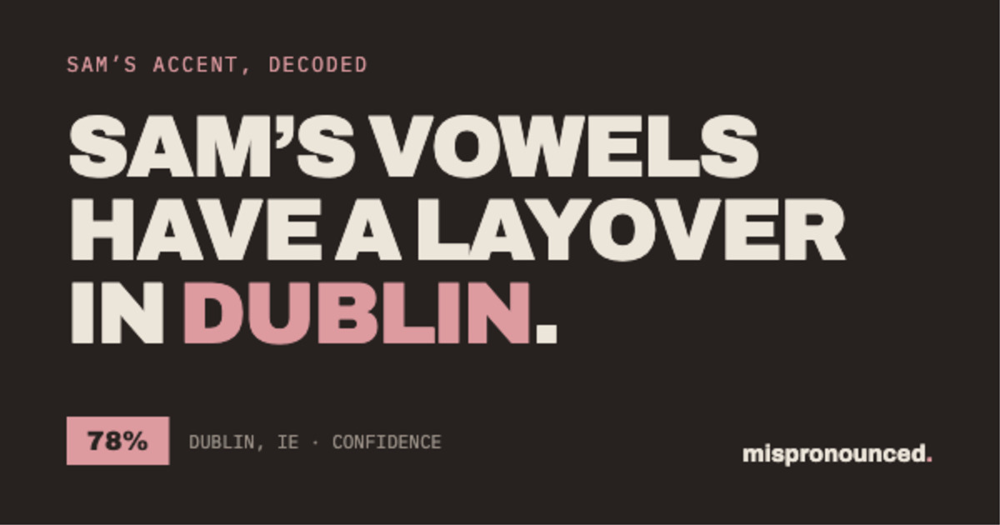
record · analyze · roastRead one short paragraph into your phone. An AI phonetician breaks down your accent — region, blend, and the exact words that gave you away.
open case file →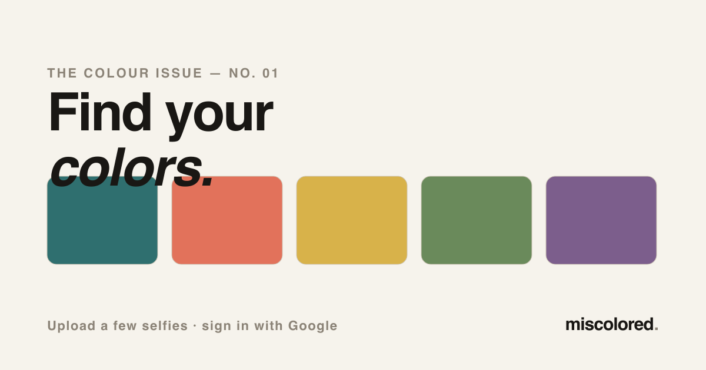
selfies → seasonal paletteUpload a few selfies and an AI stylist places you in the 12-season color system — your best colors, the ones to avoid, metals and neutrals, palette twins — then generates photos of you dressed in your palette. The color-theory cousin of Mispronounced.
open case file →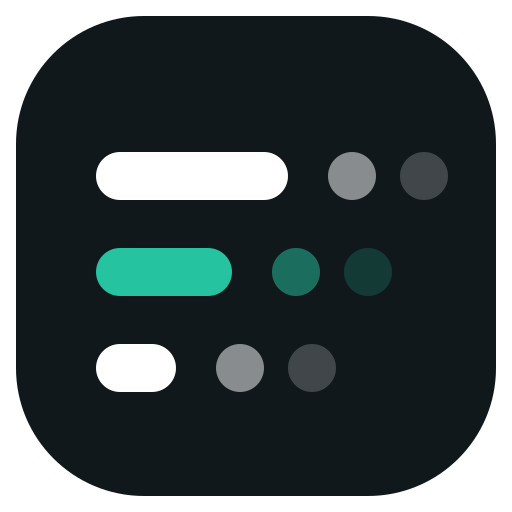
aes-256 · client-side · zero-knowledgeShare sensitive text between your own devices without trusting the server. Every pad is AES-256 encrypted in the browser before it leaves — the passphrase never travels — with version history, syntax highlighting, and a privacy mode for screen-sharing.
open case file →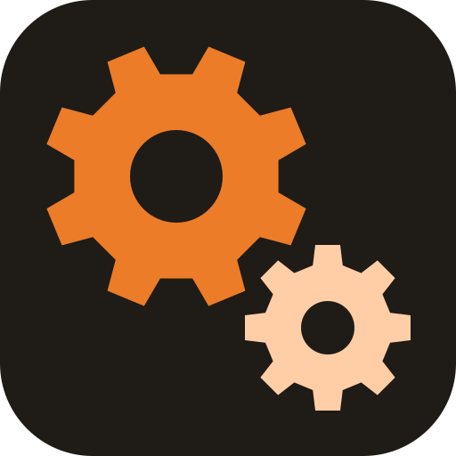
lead → quote → build → deliverA white-label back office for small custom-maker shops — woodworkers, framers, sign shops — to run the arc they all share: a lead becomes a quote becomes a multi-week build, with the client watching progress the whole way. Row-level tenancy; each shop at its own subdomain.
open case file →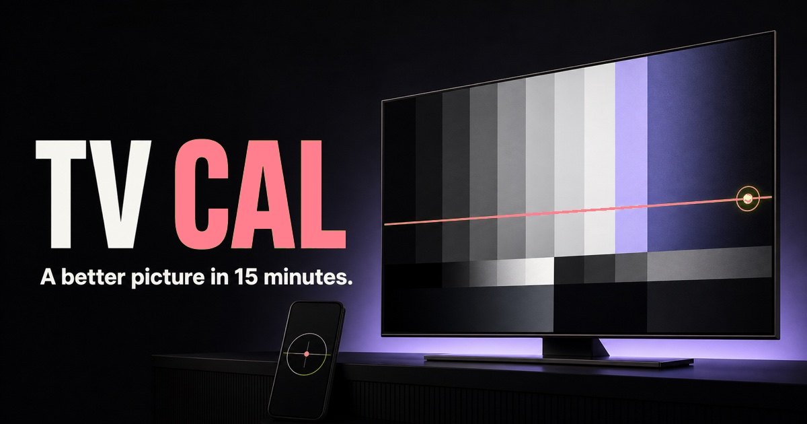
phone-guided · camera assistYour TV ships mis-tuned out of the box. Cast the test patterns to the screen, keep the phone in your hand, and walk eight steps in your TV's own menu names — then point the camera at the screen and it reads the bars for you and calls the setting live.
open case file →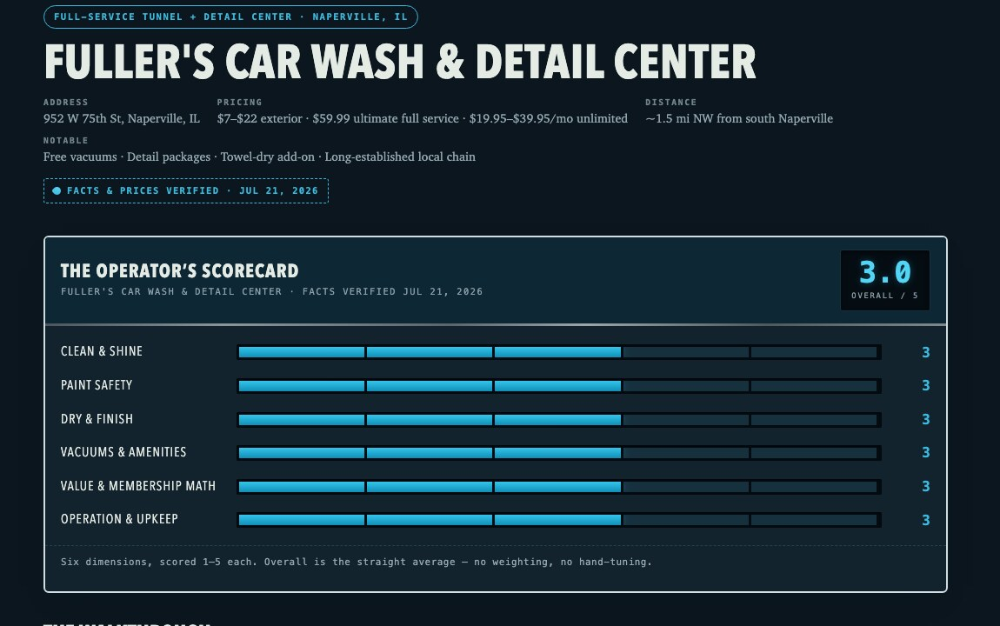
local seo · e-e-a-t · ai funnelAn experiment in being the source an AI assistant cites. Eleven washes within fifteen minutes of me, each scored on six dimensions by someone who actually managed a tunnel for nine years — structured, dated, and machine-readable, so "what's the best car wash in Naperville?" has one obvious answer to quote.
open case file →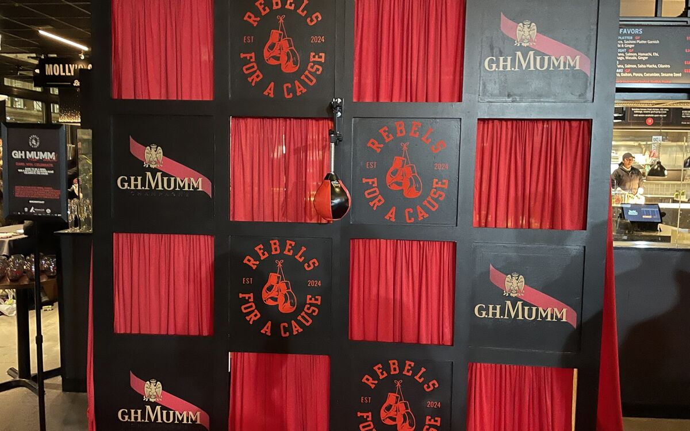
catalog feed · relays · no dbWedding arches, candy carts, bar fronts and lit marquee signs for a two-person shop in Bloomingdale, IL. The site itself keeps no data — it reads its catalog from a feed and relays its forms — which makes it the worked example of how thin an OurWorkshop client's website is allowed to be.
open case file →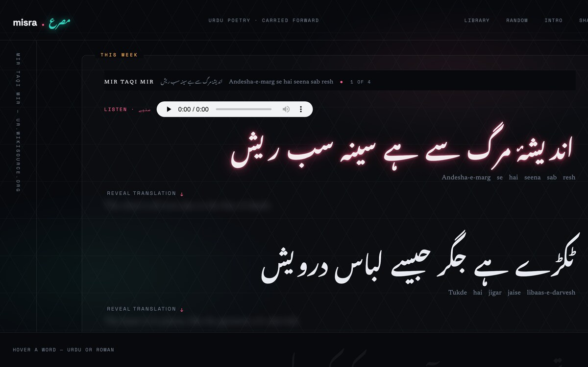
three scripts · glossed · recitedA weekly Urdu poem shown three ways at once — original Nastaliq, Roman Urdu, natural English — with a meaning under every word that carries one, and a recitation on every poem. A library of 144, from Ghalib, Iqbal and Mir.
open case file →A landing site for a HydraFacial & hair-wellness home studio in Bolingbrook, IL. One fast, static page — no framework, no build step — in a sage-and-cream editorial palette. Built for my mother-in-law.
visit the site ↗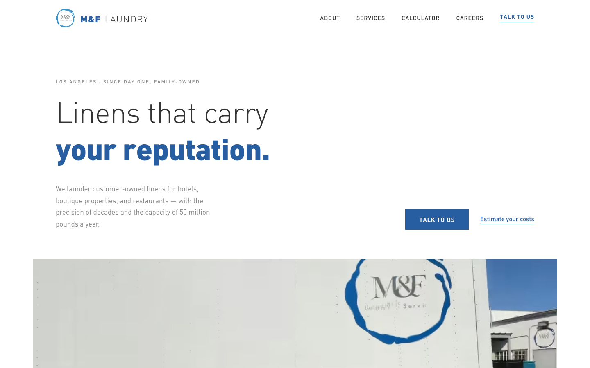
client site · liveA chic-editorial marketing site for a family-owned commercial laundry in Los Angeles — DIN type, hairline rules, a working OPL cost calculator, a bilingual careers page with resume intake, and 301s off the old WordPress URLs to keep the SEO.
visit the site ↗A note on method, because the method is half the point: I don't type these. I built an interview skill for Claude Code — it digs through twenty years of my version-control history for receipts, then interviews me about what it finds. I answer out loud, it writes the piece in a chosen style (the styles will rotate as the series grows), and I check every number and edit what comes back before it ships. The same tools I use to see several hundred plants through their daily problems and growth ideas, pointed at getting my own story on the record.